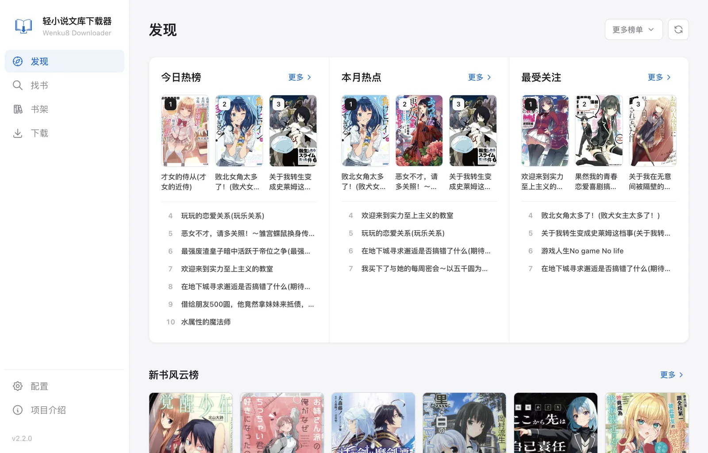

Wenku8 Downloader __APP_VERSION__
把喜欢的轻小说
打包带走
从发现、找书、书架同步到 EPUB 导出，在一个安静、清晰的桌面工具里完成
所有发布包均未签名，请只从本项目 Releases 下载。macOS 首次启动请在 Finder 中右键选择“打开”；Windows 若提示未知发布者，请核对来源后选择“更多信息”→“仍要运行”

为个人阅读整理而设计
- 开源免费
- 本地优先
- macOS / Windows
- 未签名发布
更顺手的阅读起点
少在网页间来回
多花时间真正阅读
找到想读的作品，选择需要的内容，然后交给应用完成整理。复杂的目录、封面与章节处理留在幕后，你只需要打开阅读器
一条完整的收藏路径
从下一本想读的书开始
围绕阅读整理
需要的能力
恰好都在
从第一次找到作品，到最后在阅读器里打开 EPUB，每一环都围绕同一个目标设计
热门与新书排行
从首页推荐、完整排行榜与年度专题中浏览值得关注的作品
浏览与精准检索
按分类和标签浏览，或通过书名、作者与作品编号快速定位
同步与更新提醒
读取原站收藏和最新章节，对比本地版本并提示可下载更新
EPUB 与插图
支持整本、分卷和插图下载，保留目录、封面、彩插与正文插画
批次与产物管理
集中查看批次、版本和进度，支持取消、重试与快速打开产物
缓存与节制访问
统一管理请求间隔、冷却与缓存，减少重复访问并保留可用结果
检查正式版本
在应用内查询 GitHub 最新正式版本，需要时直接打开发布页
文件去向可控
自定义 EPUB 与插图保存位置，输出结构保持清晰
克制、透明、可靠
一款知道边界
在哪里的工具
本地优先
配置、任务与缓存保留在本机，不接入项目自建云端服务
节制访问
统一管理请求间隔、重试与限流，尽量减少对数据源的额外压力
开源透明
项目基于 MIT 许可证开源，实现、问题和发布记录均可查阅
打开应用之后
三步收进
自己的书架
登录数据源账号并设置保存路径后，就可以从发现、找书或原站书架开始整理离线书库
-
01
找到作品
从发现页和年度榜单浏览，按分类筛选，或直接通过书名、作者和编号检索
-
02
选择内容
下载整本 EPUB、指定分卷，或者只整理插图
-
03
开始阅读
任务完成后，把文件放进常用的阅读器、平板或手机
常见问题
开始之前
你可能想知道
这个工具提供小说内容吗？
不提供。应用只帮助用户从数据源检索并整理内容，使用时仍需遵守站点规则与相关版权要求
支持哪些系统？
提供 macOS Apple Silicon、macOS Intel 和 Windows x64 版本，macOS 需要 13 Ventura 或更高版本
为什么安装时会提示未知开发者？
项目所有正式发布包均保持未签名。请只从本项目 Releases 下载；macOS 首次启动可在 Finder 中右键选择“打开”，Windows 可在确认来源后选择“更多信息”→“仍要运行”
账号和下载记录会上传吗？
不会上传到项目自建服务。普通配置、任务和缓存均保留在本机
可以只下载某一卷或插图吗？
可以。作品详情页支持整本、分卷和插图三种下载方式